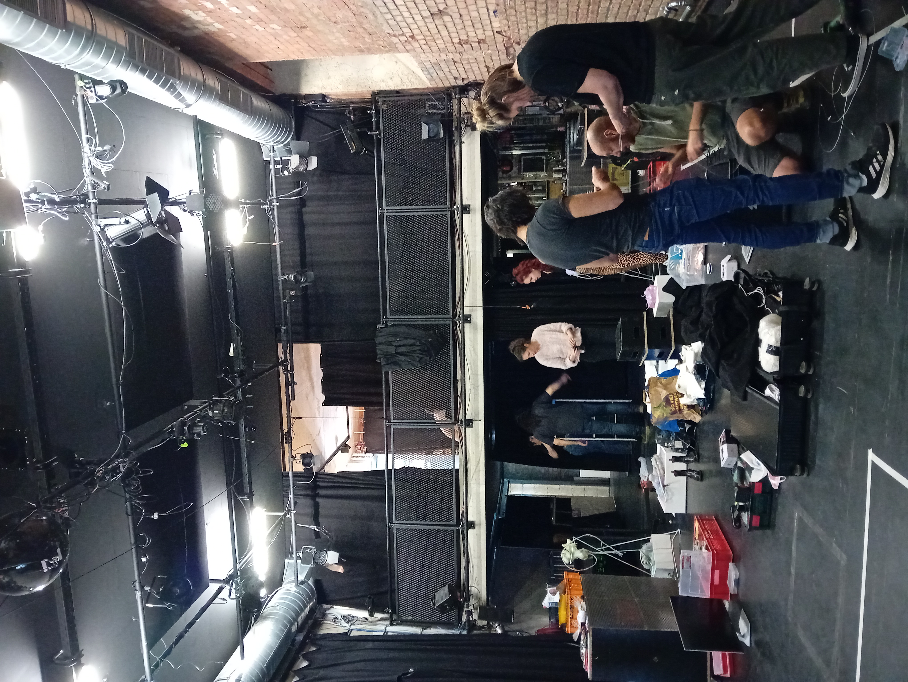
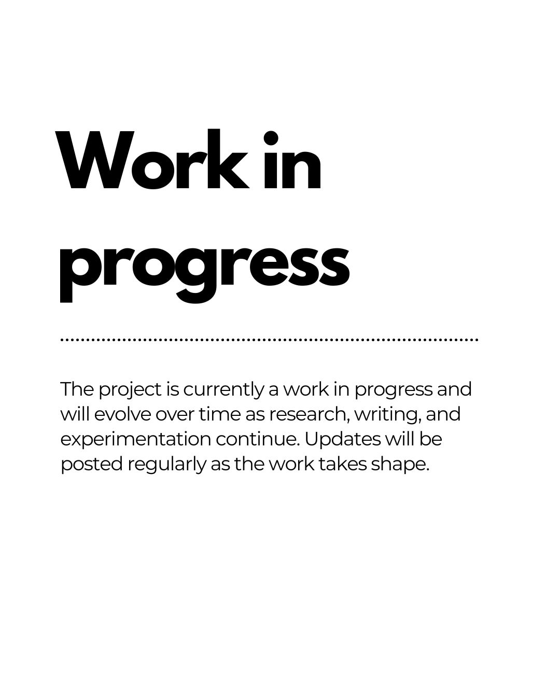

[ARTIFICIAL] TERRITORIES
Assistant Curator for this immersive transmedia exhibition at Das LOT (Vienna, May 2025), exploring AI as a creative tool and critical subject in media art. Learn more.
Renia Korma (*1999) is a curator focused on the intersection of digital technologies and cultural heritage. Currently completing an MA in Communication & Information Studies – Digital Humanities at the University of Groningen, she explores innovative ways to blend technology with museum curation and contemporary art.
Her academic background includes a Bachelor’s degree from the University of Athens, where she specialized in applied statistics and researched educational software for teaching ancient Greek. She graduated with distinction and holds a certificate in Green Digital Skills from INCO Academy.
Her Master’s studies span three key areas: theory, data processing, and applied skills. She developed technical proficiency in Python (via Anaconda and VS Code), HTML, SQL, ArcGIS and ArcGIS Pro, R for text analysis, and Gephi for network analysis.
Among her research projects is Unveiling the Forbidden: A Digital Dive into North America's Censored Literature, which analyzes 46 banned books in the United States from the 19th century to today. Using topic modeling and metadata analysis, the project identifies patterns in censorship related to race, sexuality, and social issues, and builds a searchable digital archive for educational and cultural inquiry.
Another major project, The Unseen Hand: Stylometric Analysis of Authorial Influence in Classic Literature, examines the stylistic and authorial relationships among literary figures such as T.S. Eliot and Vivienne Haigh-Wood Eliot, Mary Sidney and William Shakespeare, and F. Scott and Zelda Fitzgerald. Using stylometric tools such as R’s Stylo package and Zeta analysis, the project explores authorship attribution and thematic intersections across time, supporting deeper insights into literary collaboration and influence. This research was presented at DH Benelux 2025 in Amsterdam.
Her thesis investigates how the geographic movements and artistic encounters of El Greco influenced his distinctive style—using GIS to map those trajectories across time and space. The research also explores how digital storytelling with geospatial tools can enrich museum exhibitions, offering new ways to present artistic narratives through interactive digital experiences.
Professionally, Renia has worked as a Digital Content Associate at Minimum Design, where she was responsible for communication with major international institutions such as the Museum Barberini, MoMA, Getty Museum, Vatican Museums, Victoria and Albert Museum, Design Museum London, MAK Vienna, and MFA Boston. She coordinated with these museum shops to develop products aligned with exhibition themes and enhance audience engagement through digital storytelling. She also managed partnerships and exhibition participation for trade fairs including Bijorhca, PURE, Homi Milano, Maison&Objet, and Shoppe Object, and collaborated with networks such as the American Alliance of Museums.
She also led AI-focused initiatives with UniAI as Team Lead of Events and Experience, including organizing hackathons that brought together artists, technologists, and researchers.
During her curatorial internship at das Lot in Vienna, Renia assisted with the exhibition Artificial Territories, gaining hands-on experience in exhibition design and audience engagement. Her projects often explore AI in interactive art, highlighting transdisciplinary collaborations that blur the boundaries between artist, artwork, and audience. She is passionate about creating immersive experiences that invite viewers to rethink the relationship between art, technology, and society.
Fluent in Greek and English, with basic knowledge of German and Italian, she is well-equipped to collaborate across cultures and disciplines. Renia plans to deepen her expertise by pursuing a second Master’s degree in Arts Management and Curatorship, aiming to contribute to innovative, independent art initiatives and cultural heritage projects.

Assistant Curator for this immersive transmedia exhibition at Das LOT (Vienna, May 2025), exploring AI as a creative tool and critical subject in media art. Learn more.

Curatorial Research in Progress
A digital humanities thesis exploring how El Greco’s geographic journey and art historical context shaped his unique style. Using GIS-based digital storytelling, the project investigates his movements from Crete to Venice, Rome, and Toledo to map artistic influence across time and space. The study also reflects on how such tools can enrich museum exhibitions by fostering new, interactive narrative forms.
Learn more.

Curated Digital Project
A geospatial and stylometric analysis of banned literature in the U.S., exploring themes of censorship, race, and sexuality across centuries through mapping and textual analysis tools.
Learn more.

Publication
A stylometric exploration of authorial influence between Eliot & Haigh-Wood Eliot, and the Fitzgeralds. Presented at DH Benelux 2025.
Learn more.
Details about upcoming or past events, workshops, or other activities.

Exhibition / Event
A creative, collaborative event centered on artificial intelligence, where participants developed innovative tools and artworks in just 48 hours.
Learn more.
If you’re interested in collaborating, have questions about curatorial projects, or just want to connect, feel free to reach out.
Based in Vienna, Austria | Athens, Greece | Netherlands